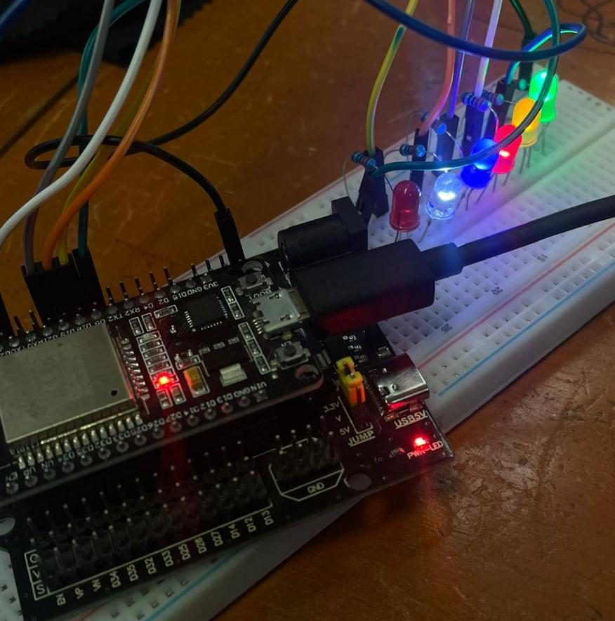
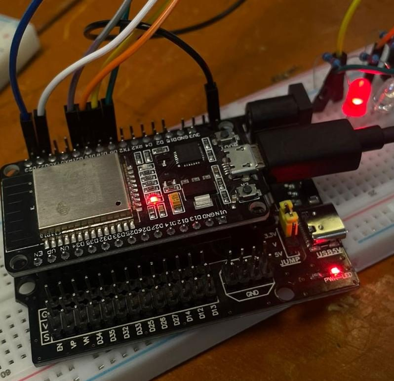

Hago que las cosas sientan, decidan y se conecten: firmware para ESP32 y Arduino, sensores, radio y apps que las controlan.
Construyo prototipos con ESP32 y Arduino que integran sensores, actuadores, comunicación inalámbrica y servicios web. Me interesan los problemas de adquisición de datos, telemetría y automatización, y resolverlos con firmware claro, probado y documentado. Itero cada proyecto en varias versiones y registro qué cambió y por qué.
Ing. TIC · TecNM Pachuca7.º semestreProfesor de robóticaInglés B2
Busco: Residencia profesional en 9.º semestre en desarrollo tecnológico, sistemas embebidos o investigación aplicada.
Las luces RGB domésticas se encienden a mano, no responden al entorno y suelen depender de un solo método de control.
Qué construí
Una lámpara con ESP32 que se enciende por presencia, reacciona a la música captada por micrófono y se controla por panel web, control IR y una app móvil; una versión posterior muestra en pantalla lo que suena en Spotify.
Qué puedo demostrar
Integración de 4 entradas (micrófono, PIR, IR, API web) y 4 salidas (LED PWM, OLED, panel web, app) en un mismo lazo no bloqueante.
Documentación y código
Reporte de evaluación (Tecnologías Inalámbricas, 28 nov 2025) con fotos de pruebas; 6 versiones de código.
Explorar un asistente de voz completo en un microcontrolador: escuchar, decidir si le hablan, responder con voz y expresar estados.
Qué construí
Una calavera con ESP32 que detecta voz con un micrófono I²S, envía la frase a Google Gemini por HTTPS, reproduce la respuesta hablada y anima dos ojos OLED; sin internet responde con audios grabados.
Qué puedo demostrar
Audio en tiempo real en una tarea FreeRTOS, umbral de ruido adaptativo, dos buses I²C simultáneos y un cliente HTTP escrito a mano que maneja respuestas chunked.
Documentación y código
Código fuente de dos versiones, foto y dos videos del prototipo funcionando.
ESP32C++FreeRTOSI²SINMP441MAX98357ASSD1306 ×2HTTPSGemini API
Construir una bocina Bluetooth propia con controles físicos y pantalla, en lugar de un módulo cerrado.
Qué construí
Una bocina con ESP32 que recibe audio del celular por Bluetooth, lo entrega por I²S, muestra título, artista y progreso en OLED y se controla con botones y perilla.
Qué puedo demostrar
Cadena de audio Bluetooth A2DP → I²S, control remoto AVRCP y una interfaz física con antirrebote y marquesina.
Un mismo robot debía competir en sumo, seguir una línea y manejarse a control remoto.
Qué construí
El firmware de un robot de 4 ruedas con Arduino UNO y tres modos que se cambian desde el celular por Bluetooth: manual, sumo autónomo y seguidor de línea.
Qué puedo demostrar
Máquinas de estados anidadas, control diferencial de motores y fusión de un ultrasónico con barrido y tres sensores de línea.
Documentación y código
Código comentado con pines y comandos, versión de evasión de borde, utilidad de configuración AT y fotos del robot.
Jugar en red local sin internet ni router, con respuesta física en el tablero.
Qué construí
Un juego por turnos para dos jugadores alojado en un ESP32 que crea su propia red Wi-Fi; los jugadores usan el navegador del celular y un servo y un buzzer dan el efecto físico.
Qué puedo demostrar
Diseño de una API REST pequeña con estado en el microcontrolador y una versión que mapea el tablero a medidas reales de un sonar.
Documentación y código
Código de ambas versiones; existe además una versión web para el taller.
Medición de RSSI en el campus, LED controlado desde el navegador, 6 LEDs con slider web, LED por Bluetooth serie y decodificación de un control infrarrojo.

Seis LEDs controlados por slider web

ESP32 en la prueba de conexión
Documentado en reporte Reportes con fotos de los montajes, capturas del navegador y del monitor serie, y video del control IR.
Monitor de nivel de agua de un tinaco por electrodos (5 niveles, filtro por moda de 5 lecturas) y por ultrasonido con LCD, con versiones que controlan un relé y envían el nivel por Bluetooth.
Verificado en código Código fuente de 11 versiones en dos computadoras.
Nodo de campo autónomo con cámara, dos sensores ambientales, reloj de tiempo real, registro en microSD y enlace LoRa a un receptor Heltec LoRa 32, alimentado por panel solar con medición de consumo. Bus I²C compartido (BME280, DS3231, INA219) y bus SPI compartido (SD y LoRa con CS separados).
Declarado por el autor Guía de armado propia (sep 2026) y prueba de flash/PSRAM de la placa. Firmware de sensores, cámara, LoRa y deep sleep en desarrollo.
Puerta que se abre con tarjeta RFID, detecta presencia con ultrasonido y se controla también por infrarrojo, con estado en pantalla. Cinco versiones (CircuitoCerrado v1–v2 y puerta 1–3).
Declarado por el autor Código y reporte técnico del proyecto.
ESP32RC522HC-SR04ServoIROLEDLCD I²C
Funcionalago 2026
Carro de ruta programada
Carro que recorre un cuadrado con una secuencia de movimientos temporizados, sin sensores.
Declarado por el autor Código fuente.
ArduinoL298N
// software
Aplicaciones y servicios
Proyectos de software que complementan el trabajo con hardware.
Flutter · Firebase · WebSENDA · seguimiento de pacientesProyecto en equipo de 3 integrantes para HackaTec 2026 (reto Software Inteligente): app móvil de seguimiento de pacientes que funciona sin conexión, con notificaciones, escáner QR y acceso biométrico, más su sitio web. Código privado.
PWA · Supabase · Web PushLlegué SeguroApp web de asistencia escolar con QR dinámico y notificaciones a las familias, diseñada para una telesecundaria.
Separado por nivel de evidencia. Una librería en un archivo de dependencias no cuenta como dominio.
Experiencia práctica demostrada
Firmware en C/C++ para ESP32 y Arduino UNOTodos los proyectos (34 sketches revisados)
Servidores HTTP embebidos y modo Access PointAURA, Batalla Naval, prácticas Wi-Fi
Clientes HTTPS hacia APIs externas (Spotify, Gemini)AURA, Calaverita
Audio digital I²S: captura (INMP441) y reproducción (MAX98357A)Calaverita, Bocina
Bluetooth Classic: A2DP, AVRCP y SPPBocina, Electronivel, prácticas Bluetooth
Buses I²C (incluidos dos buses simultáneos), SPI y UARTCalaverita, RFID, Robot 4WD
PWM, ADC y control de motores con puente HAURA, Robot 4WD
Sensores HC-SR04, PIR HC-SR501, KY-037, MFRC522 e IR NECAURA, Robot, RFID, pluma vehicular
Máquinas de estados y lazos no bloqueantes con millis()Robot 4WD, Tamagotchi, Batalla Naval
Simulación de circuitos en TinkercadPluma vehicular
Tecnologías utilizadas en proyectos
FreeRTOSTarea de audio fijada a un núcleo en la Calaverita
EEPROMPersistencia de partida en el Tamagotchi
ArduinoJson y SpotifyArduinoConsulta de la API de Spotify en AURA
React Native, Expo y react-native-ble-plxApp cliente BLE de AURA
HTML, CSS y JavaScript embebidos en firmwarePaneles web de AURA y Batalla Naval
Supabase y PWALlegué Seguro
Cisco Packet TracerPrácticas de VLAN en Redes Emergentes
Conocimientos por profundizar
MQTT y plataformas de telemetría
Procesamiento digital de señales (FFT) para audio
BLE del lado del ESP32 (servidor GATT)
Gestión de energía y modos sleep del ESP32
Validación de certificados TLS y manejo seguro de secretos
Diseño de PCB
Control de versiones y pruebas para firmware
LoRa (RFM95W), deep sleep y alimentación solar (Red Centinela, en armado)
ESP32-S3 con PSRAM y cámara OV2640
Intereses profesionales
Sistemas embebidos y firmware
ESP32, Arduino y electrónica aplicada
IoT, telemetría y adquisición de datos
Sensores, actuadores y sistemas de control
Redes, comunicaciones y protocolos
Robótica y automatización
Integración de hardware con software, APIs y servicios web
Formación
Ingeniería en Tecnologías de la Información y Comunicaciones
TecNM Campus Pachuca · ago 2023 – jun 2028 · 7.º semestre
Materias aplicadas en los proyectos: Tecnologías Inalámbricas, Arquitectura de Computadoras, Circuitos Eléctricos y Electrónicos, Telecomunicaciones, Redes de Computadoras y Redes Emergentes.
Certificaciones
AWS Academy Graduate · Cloud FoundationsAmazon Web Services · sep 2025
B2 First (First Certificate in English)Cambridge English · jun 2025
Introduction to HTML, CSS & JavaScriptIBM · jun 2026
Imparto un taller STEAM de robótica para 4.º de primaria a 1.º de secundaria: una hora semanal con Arduino UNO R3, robot 2WD seguidor de línea y mBlock 5, con aprendizaje basado en proyectos y preparación de un equipo para RoboFest LATAM.
Sep 2026
HackaTec 2026 · reto Software Inteligente
TecNM Campus Pachuca · equipo de 3 integrantes · Competencia en equipo
Participé con dos compañeros en el desarrollo de SENDA, solución de software para el seguimiento de pacientes (app móvil y sitio web). Memoria técnica entregada el 30/09/2026.
Mar 2026
Event Staff · RoboFest LATAM 2026
RoboFest LATAM · Voluntariado
Atención a participantes y soporte al equipo organizador de la competencia de robótica.
Nov 2025
Event Support Assistant · HackaTec 2025
Tecnológico Nacional de México · Apoyo logístico
Apoyo en la organización del evento de innovación tecnológica.
// código
Fichas, código y demostraciones
Código fuente de cada proyecto en GitHub. Las fichas técnicas también existen en PDF, junto con un CV técnico y un resumen ejecutivo.
Busco una residencia profesional en desarrollo tecnológico, firmware, IoT o integración de hardware y software. Puedo mostrar en persona los prototipos y su código.